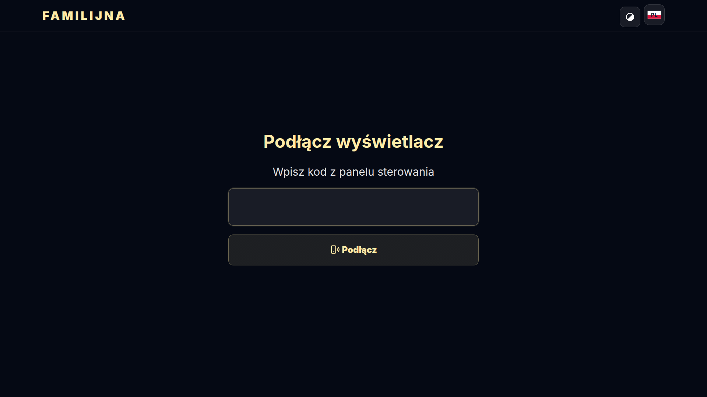
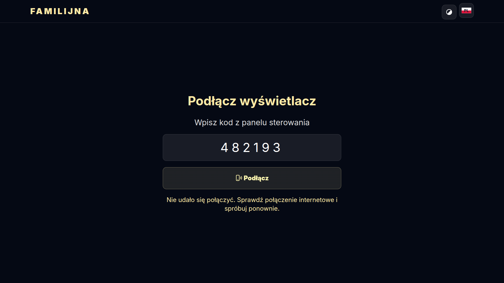
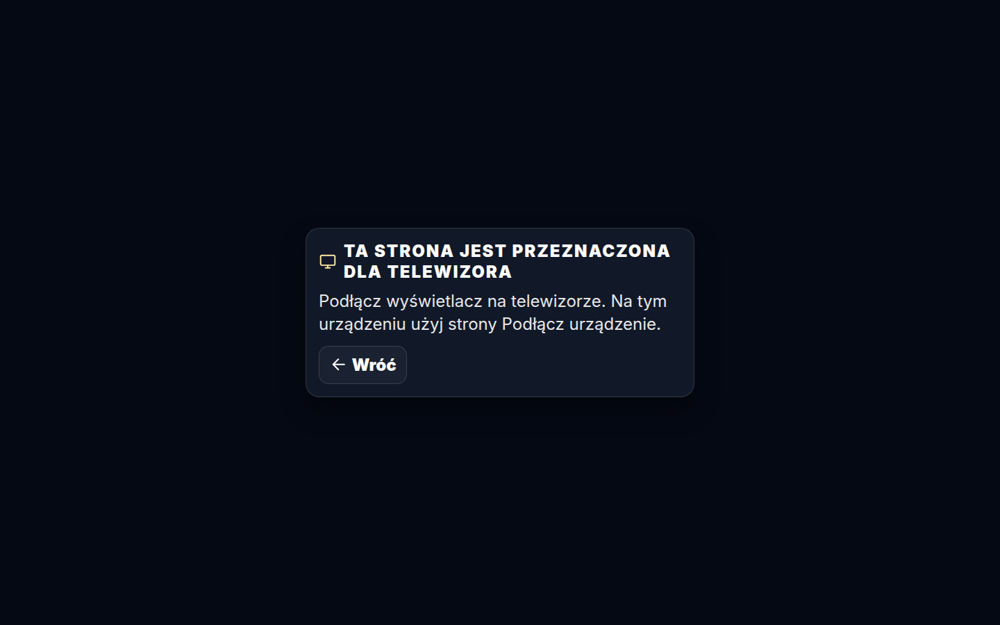
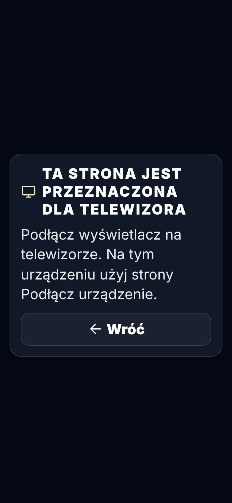

Zrzuty — 2026-11-05 22:13 UTC
Podłącz telewizor — kod Wyświetlacza (przeglądarka TV) pl · 1920×1080

Podłącz telewizor — kod Prowadzącego (nie dla telewizora) pl · 1920×1080

Podłącz telewizor — otwarte na komputerze (tylko telewizor) pl · desktop

Podłącz telewizor — otwarte na komputerze (tylko telewizor) pl · phone
